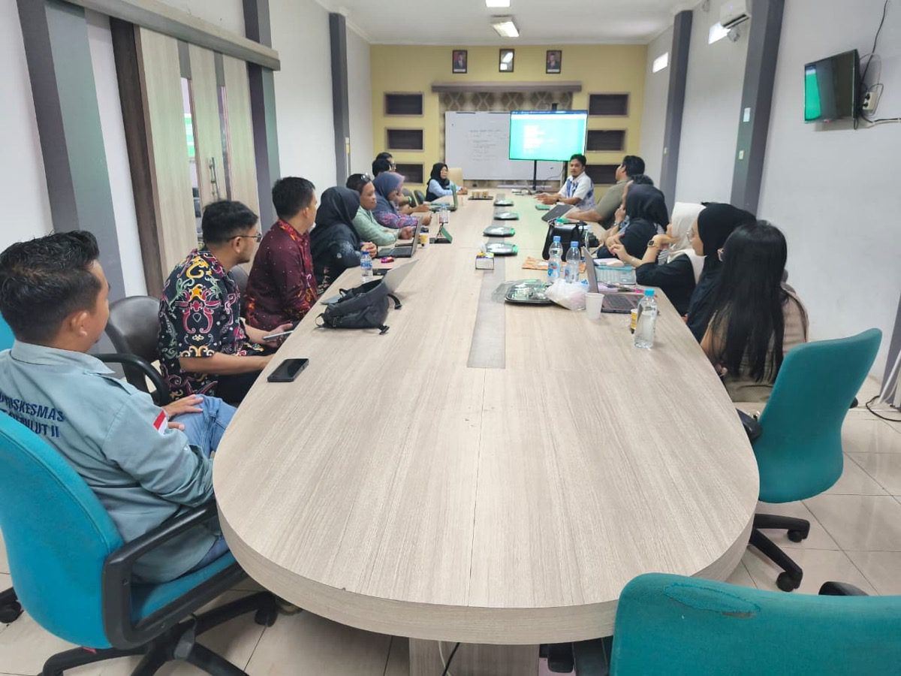
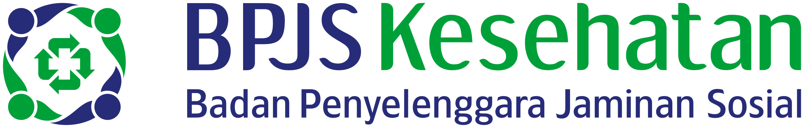
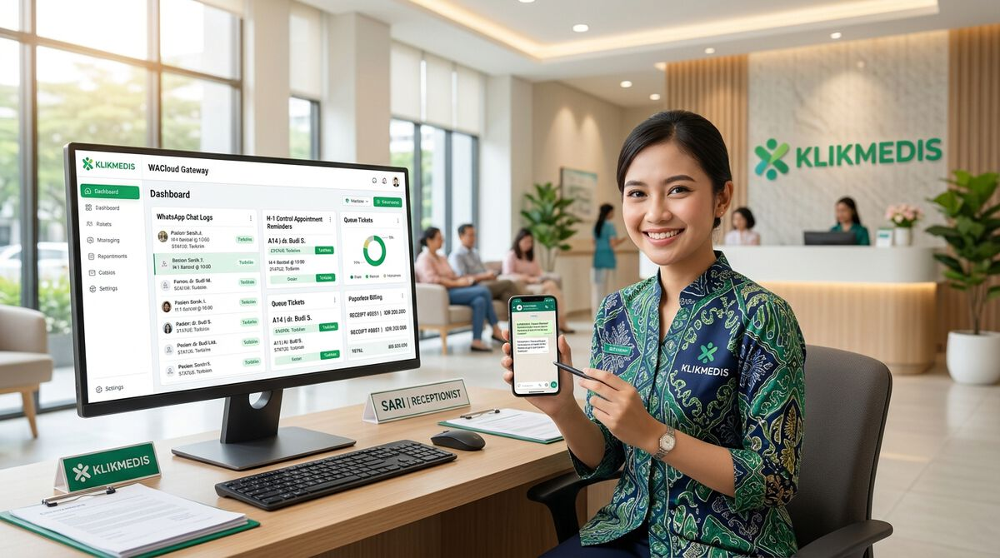

Masalah yang Kerap Menghambat Pertumbuhan Klinik Anda
Peralihan dari era manual ke digital sering kali membingungkan dan melelahkan jika menggunakan sistem yang rumit atau tanpa pendampingan.
Didampingi Penuh Sampai Operasional Lancar
Memulai sistem baru tidak mudah. Tim KLIKMEDIS mendampingi praktik mandiri, klinik, dan laboratorium mulai dari implementasi, pelatihan tenaga kesehatan, didampingi intensif sampai operasional berjalan lancar, hingga terhubung resmi dengan SATUSEHAT dan BPJS. Sudah lebih dari 450 fasilitas kesehatan menggunakannya.

Dipercaya Klinik dan Fasilitas Kesehatan di Berbagai Daerah
Mulai dari dokter praktik mandiri hingga klinik utama dan laboratorium medis — ribuan tenaga kesehatan telah beralih ke rekam medis digital yang cepat, rapi, dan terintegrasi resmi SATUSEHAT bersama KLIKMEDIS.
…dan telah dipercaya oleh 450+ klinik & fasilitas kesehatan di seluruh Indonesia.
Fitur Utama Aplikasi RME untuk Kelola Klinik Lebih Cepat & Patuh Regulasi
Dirancang praktis untuk alur kerja klinik sehari-hari. Mulai dari antrean pasien, pemeriksaan dokter, e-resep, farmasi, kasir, hingga integrasi wajib SATUSEHAT dan BPJS PCare — semua terkoneksi dalam satu sistem.

Pendaftaran & Antrean Pasien
Registrasi pasien baru maupun lama dengan cepat. Cari data pasien instan menggunakan NIK atau Nomor Rekam Medis (No. RM), serta terbitkan nomor antrean per poli dan dokter secara otomatis.

Rekam Medis Elektronik (SOAP)
Pencatatan klinis berstandar SOAP: anamnesis, pemeriksaan fisik & tanda vital, diagnosa ICD-10, serta tindakan medis ICD-9. Dilengkapi riwayat kunjungan terdahulu yang rapi dan mudah dibaca dokter.

Farmasi & Stok Obat Sederhana
Pengelolaan stok obat yang praktis dan akurat. Catat mutasi stok masuk/keluar otomatis, peringatan dini saat persediaan obat menipis, serta pemantauan tanggal kedaluwarsa (expired date) obat.

Laporan Keuangan (Pendapatan & Pengeluaran)
Memberikan gambaran utuh tentang kesehatan finansial klinik Anda. Pantau seluruh arus kas secara transparan — mulai dari rincian pemasukan kasir (tindakan, konsultasi, obat, lab via Tunai/Transfer/QRIS) hingga pencatatan pos pengeluaran operasional klinik dan belanja logistik/obat.

Laporan Operasional & Morbiditas Pasien
Sajikan rekapitulasi data pelayanan klinik siap cetak dan export Excel/PDF: rekap kunjungan harian, bulanan, hingga tahunan per poli dan per dokter, grafik 10 besar penyakit terbanyak (morbiditas ICD-10), serta demografi sebaran usia dan jenis kelamin pasien.
Kepatuhan Regulasi Resmi & Bridging Faskes
Dua integrasi krusial yang menentukan kepatuhan legalitas dan kelancaran klaim klinik Anda — siap pakai dan telah teruji di ratusan klinik.
Integrasi Resmi SATUSEHAT
Bukan lagi sekadar fitur tambahan, melainkan kewajiban regulasi Kemenkes RI (Permenkes No. 24 Tahun 2022). KLIKMEDIS menjembatani data pasien (IHS), nakes, encounter, diagnosa, dan tindakan medis langsung ke SATUSEHAT Kemenkes tanpa ribet.
- IHS Number Pasien & Dokter terverifikasi otomatis
- Sinkronisasi Encounter, Diagnosa, & Tindakan ke server Kemenkes
- Klinik Patuh Regulasi Penuh, aman untuk akreditasi faskes

Bridging BPJS (PCare & Mobile JKN)
Fitur wajib bagi klinik pratama yang bermitra dengan BPJS Kesehatan. Pendaftaran dan verifikasi status kepesertaan pasien terhubung langsung ke PCare BPJS, serta kuota dan nomor antrean tersinkronisasi otomatis dengan aplikasi Mobile JKN.
- Bridging PCare Real-time (Kunjungan, Diagnosa, Rujukan & Tindakan)
- Antrean Online Mobile JKN terhubung langsung ke klinik
- Cek Status Kepesertaan Instan tanpa buka web PCare terpisah
Kenapa Harus KLIKMEDIS?
Solusi RME yang mudah, fleksibel, dan didukung tim IT profesional untuk membantu klinik bekerja lebih efisien dan berkembang.

Terbukti Mudah Digunakan
Sistem dirancang untuk memudahkan dokter, perawat, dan staf klinik dalam mengelola pelayanan pasien, mulai dari pendaftaran hingga pembayaran, dalam satu aplikasi yang terintegrasi.

Integrasi SATUSEHAT & BPJS
Mendukung integrasi dengan SATUSEHAT dan layanan BPJS yang dibutuhkan klinik untuk mempermudah pertukaran data dan mengurangi pekerjaan administratif berulang.

Laporan & Keuangan Terintegrasi
Pantau pendapatan, transaksi kasir, pembayaran pasien, piutang, dan laporan operasional klinik dengan lebih mudah, rapi, dan transparan.

Support System
Tim support siap membantu setiap kendala terkait sistem manajemen klinik Anda, serta mendampingi kebutuhan penggunaan dan operasional aplikasi.

Fleksibel & Bisa Dikembangkan
Ajukan kebutuhan fitur sesuai alur kerja klinik Anda. Kami siap membantu mengembangkan sistem agar terus menyesuaikan kebutuhan dan pertumbuhan klinik.

Biaya Terjangkau & Transparan
Nikmati biaya langganan yang jelas dan fleksibel tanpa kontrak minimum yang memberatkan, sehingga klinik dapat mengelola anggaran operasional dengan lebih tenang.
Satu Sistem untuk Berbagai Jenis Layanan Kesehatan
KLIKMEDIS dapat digunakan oleh praktik mandiri (dokter umum & spesialis), klinik pratama/utama, hingga laboratorium — sesuaikan modulnya dengan kebutuhan Anda.

Praktik Mandiri & Dokter Spesialis
Sangat cocok untuk dokter umum, dokter spesialis (anak, kandungan, penyakit dalam, mata, THT, kulit, gigi, dll.), bidan, atau perawat yang membuka praktik mandiri dengan alur periksa cepat, pencatatan rekam medis fleksibel, dan kepatuhan SATUSEHAT.

Klinik Pratama & Utama
Untuk klinik pratama maupun utama dengan banyak poli, dokter spesialis bergilir, instalasi farmasi obat, kasir terpadu, hingga rawat inap.

Laboratorium Medis
Untuk laboratorium klinik yang ingin pencatatan jenis pemeriksaan, input nilai rujukan, dan cetak hasil lab lebih rapi dan cepat.
Fitur Tambahan (Add-Ons) untuk Klinik Berkembang
Lengkapi sistem utama KLIKMEDIS dengan modul add-on yang terintegrasi penuh. Mulai dari komunikasi otomatis pasien via WhatsApp, modul pengelolaan karyawan (HRIS), aplikasi akuntansi faskes, hingga integrasi kecerdasan buatan (AI) untuk diagnosis dan tanya jawab kesehatan.

Komunikasi PasienIntegrasi WhatsApp
Notifikasi & Reminder OtomatisOtomatisasi pengiriman pesan WhatsApp resmi ke nomor pasien langsung dari sistem klinik. Efektif menurunkan angka ketidakhadiran pasien dan mempercepat alur informasi layanan.
- Pengingat Kontrol Otomatis: Notifikasi H-1 otomatis ke WhatsApp pasien.
- Tiket & Status Antrean: Pasien terima nomor antrean dan estimasi giliran.
- Struk & Resume Medis: Kirim kuitansi pembayaran dan resume digital tanpa kertas.
- Broadcast Informasi: Sampaikan jadwal praktik dokter dan edukasi kesehatan.
 Manajemen SDM & Nakes
Manajemen SDM & Nakes
Modul Karyawan (HRIS)
Database, Shift & Payroll NakesKelola dokter, perawat, apoteker, dan staf klinik secara terpusat. Mengatur jadwal shift dinas, presensi GPS, hingga perhitungan payroll penggajian nakes dalam satu sistem terpadu.
- Database Nakes & STR/SIP: Pengarsipan data nakes dengan reminder STR/SIP dokter.
- Jadwal Shift & Roster: Atur shift dinas nakes pagi, siang, malam transparan.
- Presensi Digital GPS: Catat kehadiran berbasis lokasi dengan rekap otomatis.
- Payroll & Slip Gaji: Hitung gaji pokok, insentif tindakan dokter, dan lembur.
 Finansial & Pembukuan
Finansial & Pembukuan
Aplikasi Akuntansi
Standar Pembukuan FaskesSistem pembukuan standar akuntansi yang terhubung langsung ke transaksi klinik. Tidak perlu input data ganda, seluruh jurnal umum, neraca, dan laba rugi tersusun otomatis.
- Jurnal Transaksi Otomatis: Transaksi kasir dan belanja obat langsung menjurnal.
- COA Standar Faskes: Struktur perkiraan akun disesuaikan bisnis klinik.
- Laba Rugi & Neraca: Laporan finansial komprehensif real-time siap saji.
- Hutang PBF & Piutang: Monitoring jatuh tempo faktur obat dan klaim BPJS.
 Kecerdasan Buatan / AI Medis
Kecerdasan Buatan / AI Medis
Integrasi AI Klinis
Diagnosis & Tanya Jawab MedisAsisten kecerdasan buatan (AI) medis yang membantu dokter menelaah data klinis pasien, mempermudah penegakan diagnosis banding (ICD-10), serta menjawab pertanyaan kesehatan.
- Smart Diagnosis & ICD-10: Rekomendasi diagnosis banding berdasarkan anamnesis.
- Asisten Tanya Jawab Medis: AI siap menjawab pertanyaan pedoman klinis & terapi.
- Cek Interaksi Obat & Alergi: Deteksi potensi benturan obat resep dan alergi pasien.
- Ringkasan Resume Klinis: Rangkum riwayat rekam medis panjang pasien secara instan.
Harga Aplikasi RME KlikMedis: Pilih Paket yang Sesuai untuk Klinik Anda
Harga transparan, tanpa biaya tersembunyi. Upgrade paket kapan saja sesuai perkembangan klinik.
Praktek Mandiri & Spesialis
Untuk dokter umum, dokter spesialis, bidan, atau perawat yang praktik sendiri.
- 1 dokter / praktisi spesialis
- Pendaftaran & antrean pasien
- Rekam medis elektronik (SOAP)
- Kasir sederhana & e-resep
- Laporan pendapatan dan pengeluaran klinik
- Ada grup WhatsApp untuk support
Paket Klinik Basic
Untuk klinik yang mulai mendigitalkan layanannya.
- Semua fitur Praktek Mandiri
- Multi poli & multi dokter
- Jadwal praktik dokter
- Kasir & pembayaran pasien
- Laporan pendapatan dan pengeluaran klinik
- Laporan kunjungan pasien
- Support via WhatsApp
Paket Klinik Pro
Untuk klinik yang membutuhkan layanan lebih lengkap.
- Semua fitur Klinik Basic
- Farmasi & stok obat
- Integrasi SATUSEHAT & BPJS
- Laporan pendapatan dan pengeluaran klinik
- Piutang & dashboard lengkap
- Support prioritas
Paket Klinik Ranap
Untuk klinik dengan layanan rawat inap.
- Semua fitur Klinik Pro
- Manajemen rawat inap
- Manajemen kamar & tempat tidur
- Billing rawat inap
- Rekam medis rawat inap
- Laporan pendapatan dan pengeluaran klinik
- Laporan rawat inap
Paket Laboratorium
Untuk laboratorium klinik.
- Pendaftaran pasien & pemeriksaan
- Master data jenis pemeriksaan
- Input & cetak hasil lab
- Kasir & pembayaran
- Laporan pendapatan dan pengeluaran klinik
- Laporan layanan laboratorium
- Support via WhatsApp
Paket Custom
Untuk kebutuhan yang tidak tercakup paket standar.
- Multi cabang
- Kustomisasi modul
- Laporan pendapatan dan pengeluaran klinik
- Add-on tertentu
- Penawaran sesuai kebutuhan
- Konsultasi dengan tim kami
Add-on opsional: WACloud, Sistem Akuntansi, Payroll — tersedia untuk semua paket.
Pertanyaan yang Sering Diajukan
Jawaban singkat untuk hal-hal yang biasa ditanyakan sebelum berlangganan.
Apakah saya bisa mencoba atau melihat demo dulu?
Bisa. Anda bisa menjadwalkan demo dan konsultasi gratis tanpa komitmen. Tim kami akan menunjukkan fitur yang sesuai dengan kebutuhan fasilitas kesehatan Anda.
Apakah ada kontrak minimum?
Biaya langganan dibuat jelas dan fleksibel, tanpa kontrak minimum yang memberatkan, sehingga anggaran operasional klinik tetap terkendali.
Apakah KLIKMEDIS bisa terhubung dengan SATUSEHAT dan BPJS?
Ya. KLIKMEDIS mendukung integrasi dengan SATUSEHAT dan layanan BPJS yang dibutuhkan klinik, untuk mempermudah pertukaran data dan mengurangi pekerjaan administratif berulang.
Bagaimana dengan data pasien saya, apakah aman?
Sangat aman. KLIKMEDIS menerapkan infrastruktur server cloud berstandar keamanan tinggi dengan enkripsi data SSL 256-bit, backup data otomatis setiap hari, serta hak akses staf bertingkat (role-based access) sesuai standar kepatuhan kerahasiaan rekam medis Kemenkes RI dan UU Perlindungan Data Pribadi (UU PDP).
Bagaimana jika saya masih memakai pencatatan lama, apakah data bisa dipindahkan?
Konsultasikan kondisi data Anda dengan tim kami. Kami bantu menyesuaikan proses perpindahan data dari pencatatan yang sedang dipakai.
Apakah ada pelatihan dan bantuan jika terjadi kendala?
Ada. Tim support siap membantu setiap kendala terkait sistem, serta mendampingi kebutuhan penggunaan dan operasional aplikasi.
Bisakah fitur disesuaikan dengan alur kerja klinik kami?
Bisa. Ajukan kebutuhan fitur sesuai alur kerja klinik Anda, dan kami siap membantu mengembangkan sistem agar terus menyesuaikan pertumbuhan klinik.
Paket mana yang cocok untuk saya?
Praktek Mandiri untuk dokter umum, dokter spesialis, bidan, atau perawat yang praktik sendiri. Paket Klinik (Basic, Pro, Ranap) untuk klinik sesuai kebutuhan layanannya, dan Paket Laboratorium untuk laboratorium. Masih ragu? Tanyakan lewat konsultasi gratis.
Apa Kata Mereka Setelah Menggunakan KLIKMEDIS?
Pengalaman nyata dari dokter, perawat, dan pengelola klinik di seluruh Indonesia.
Belum yakin paket mana yang cocok?
Isi data singkat berikut. Tim kami akan menghubungi Anda lewat WhatsApp untuk konsultasi gratis tanpa komitmen.